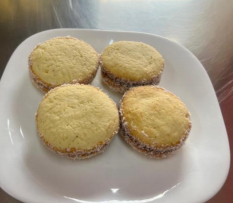

← Volver al módulo 1

Alfajor de Maicena
Alfajor suave relleno de manjar, cubierto con coco rallado y delicioso aroma a vainilla.
Ingredientes
- 100 g de harina
- 150 g de maicena
- 80 g de azúcar
- 2 cucharillas de polvo de hornear
- 2 yemas
- 100 g de margarina sin sal
- 1 taza de manjar Nestlé
- 150 g de coco rallado
- 1 cucharada de esencia de vainilla
Preparación
Mise en place; tamizar harina en bol grande, agregar margarina, maicena y azúcar, mezclar.
Abrir volcán, añadir yemas y leche; integrar. Agregar polvo de hornear al final.
Llevar al refrigerador 15 min.
Uslerear masa 0.5 cm, cortar con cortadora y colocar en placa enmantecada.
Hornear 10-15 min a 180 °C.
Rellenar con manjar, cubrir con otra figura, bañar con coco y refrigerar 15 min.